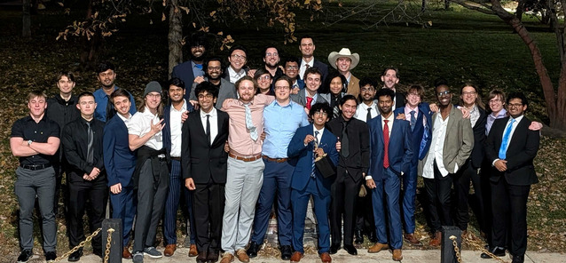
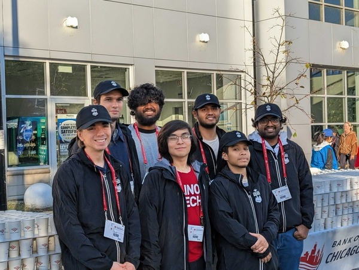

Hello, I'm Christian!
I am a first year undergraduate majoring in Applied Cybersecurity and Information Technology.
Based on credit hours, completing Fall 2025 netted me 68 credit hours at the end of my 1st semester
I was originally undecided, but I was leaning towards ITM and by the suggesting of my friends,that I should do Applied Cyber, which as I introduced myself as I took that advice.
This is my second semester here at Illinois Tech. I'm having a great time.
I've met a lot of new people and new friends. Everyone's college experience is unique and now I can say that aswell!
My College Experience
Going into fall, I had no idea what would unfold in the coming months. I was just expecting classes and homework.
Welcome week went well, it got boring after day 2, but I was getting used to the campus.
Then, Taste of the Quad happened that Saturday and things started to come into place.
Joining the Alpha Epsilon Chapter of Phi Kappa Sigma
I joined a fraternity, a shocker even to me.
I had little interest in greek life and just thought of fraternities the same way they are portrayed in media.
For me, Skulls (Phi Kapaa Sigma) was a fraternity that was different from the rest on campus
- The house was clean and well maintained by the members
- The food was amazing and way better than the commons
- It was also a dry fraternity
All of this combined and the rest of the members being great people made me decide to rush Skulls
Below should be an image of me and the brothers:
- Toney, Jared(RA), Ian, Naveen, Jacob, Jordan, Yash
- Vivek, Sidd, Bhuvan, Thupten, Dylan, Me, Ron
- Kaleb, Ronal, Clement, Mateo, Neehal, David, Marshall
- Austin, Justin(Chapter Advisor), Yashas, Madhu
- Roderick, Andre, Simon, Marty, and Delwin

Here I am in the middle of the second row for our Fall 2025 initiation.
Chicago Marathon Volunteering
One of the things we do at Skulls in participate in community service.
Each fall and spring we volunteer for the Chicago Marathon and Shamrock Shuffle.
I was able to volunteer at the 2025 Chicago Marathon to prepare water for all the participants.
It was amazing to see so many people while also being able to hand them water, which you need to develop a certain technique so the cup isn't dropped.

It was a great time and I can't wait to volunteer for more of these events.
Also that's me in the middle with my Illinois Tech red shirt when my hair was longer.
Hobbies
Everyone has them and it's a great way for people to get to know you better by sharing your hobbies.
I'll list out a couple of mine below:
- Reading Manga
- Watching Anime
- Gaming, Mostly JRPGs and older games
- Collecting Manga
- Collecting Figures and Merch
- Watching Vtubers
Now the last one is a niche within a niche, Vtubing. Essentially vtubing is livestreaming using a virtual avatar. Mainly in the Japanese side of vtubing, a lot of vtubers are also idols. I mainly watch Hololive vtubers which are streamers first and idols second. My dream someday is to be able to attend one Hololive's concerts live in order to support my favorites.
Below is a highlight from 2025's Holo fes.